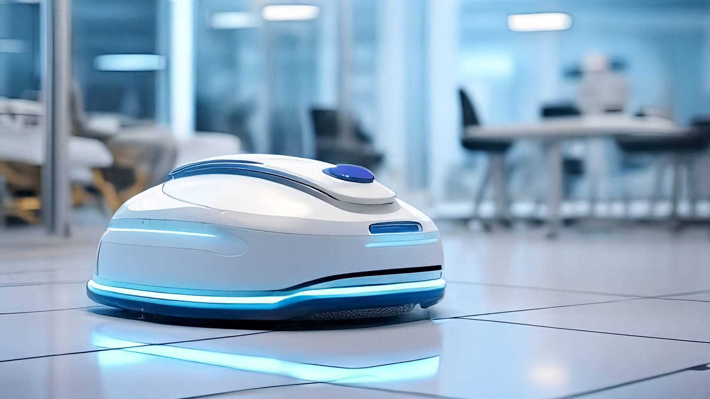

Cleaning Mice

Welcome to a home where cleanliness is achieved with the push of a button, thanks to our innovative cleaning mice. These advanced, robotic devices autonomously patrol your home, sweeping and scrubbing every surface to perfection. Their intelligent navigation ensures that no corner is missed, maintaining a spotless environment without any effort on your part. With their efficient, self-operating design, you'll enjoy a pristine living space every day, effortlessly. Experience the ultimate in hassle-free home maintenance with our cutting-edge cleaning mice and enjoy a cleaner, more convenient lifestyle.